Galeria
Os detalhes dizem muito sobre o lugar.
Uma seleção de ambientes, montagens, gastronomia e celebrações para apresentar a atmosfera do Sítio Salvador.
Imagens reais do espaço


Natureza, celebração e cuidado em cada composição.
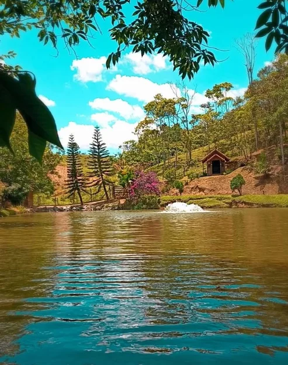
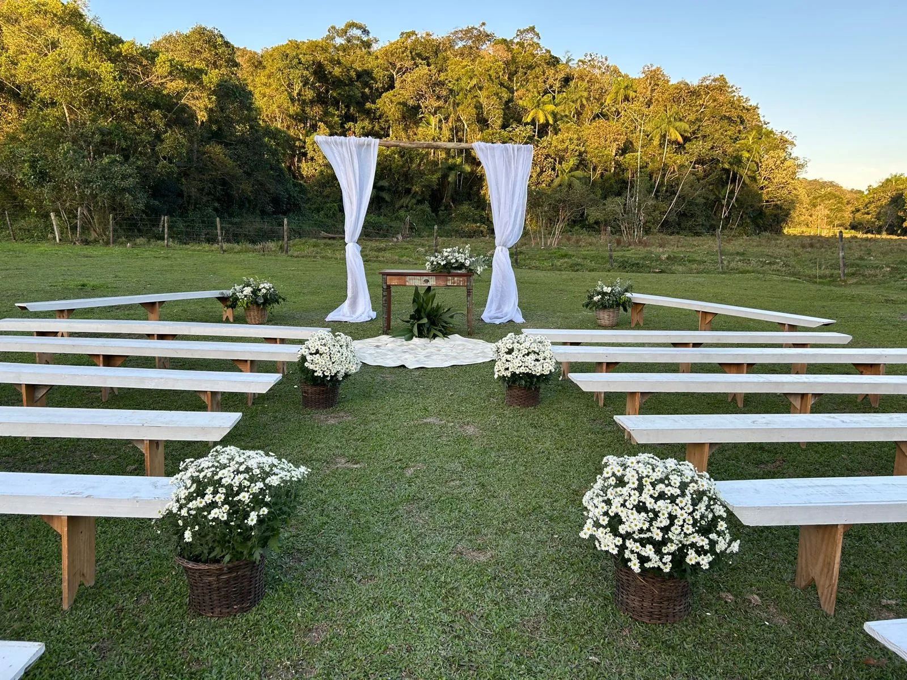
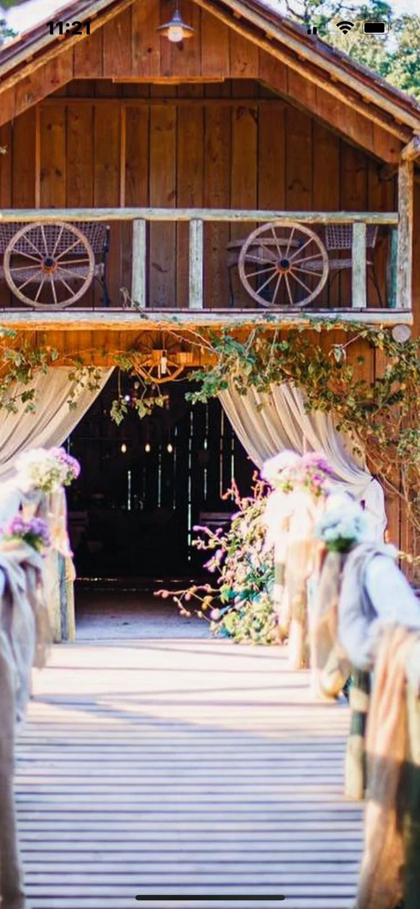
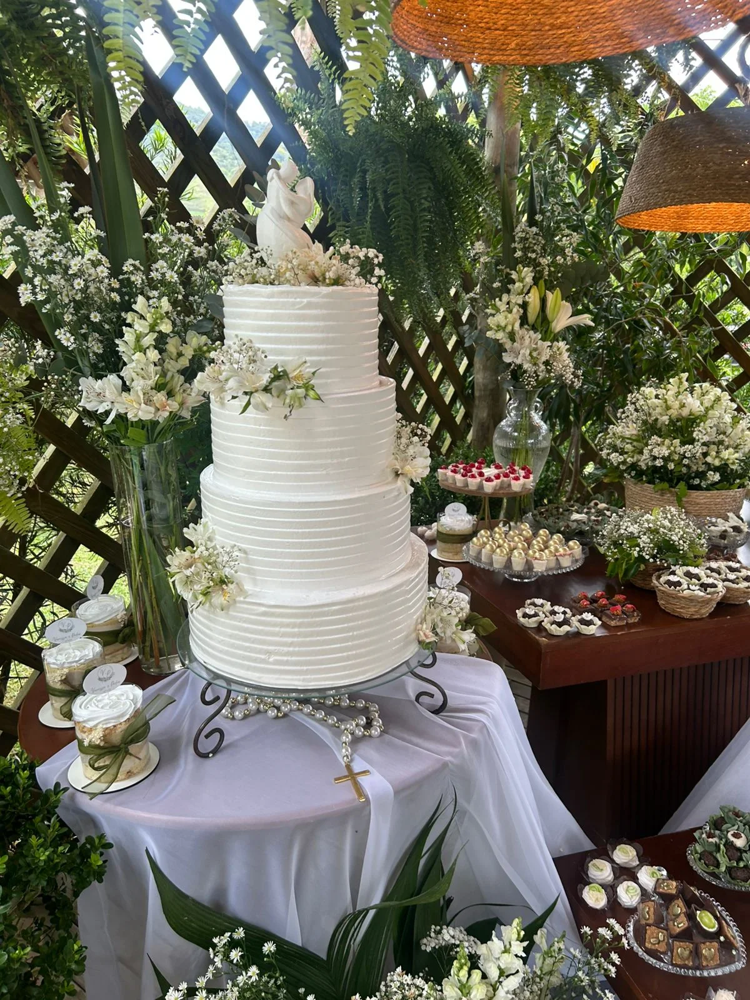
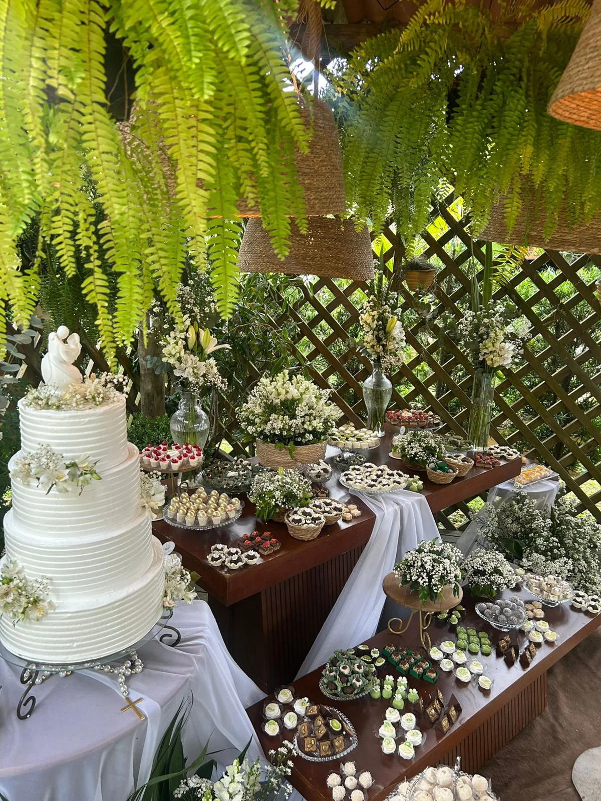
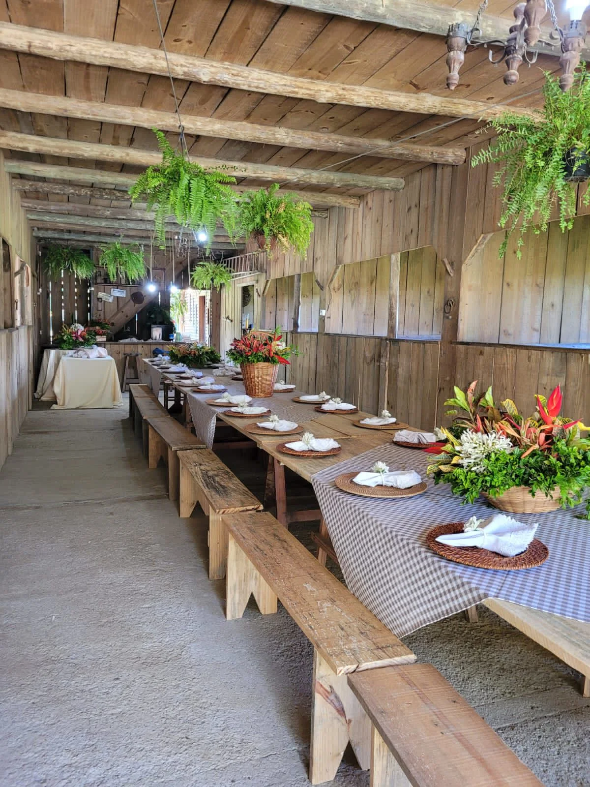
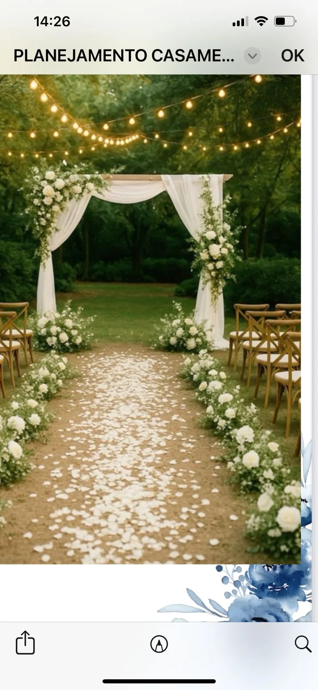
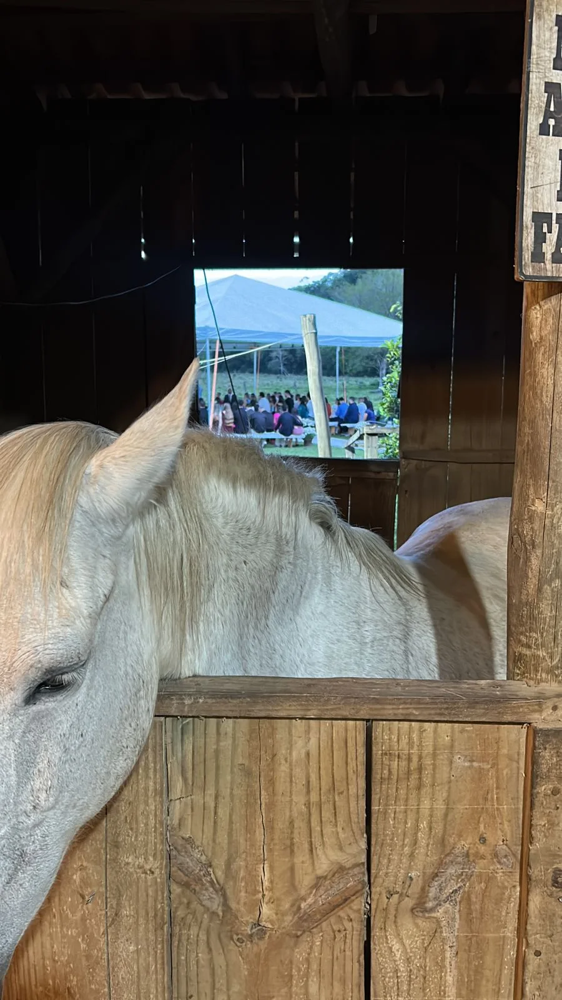
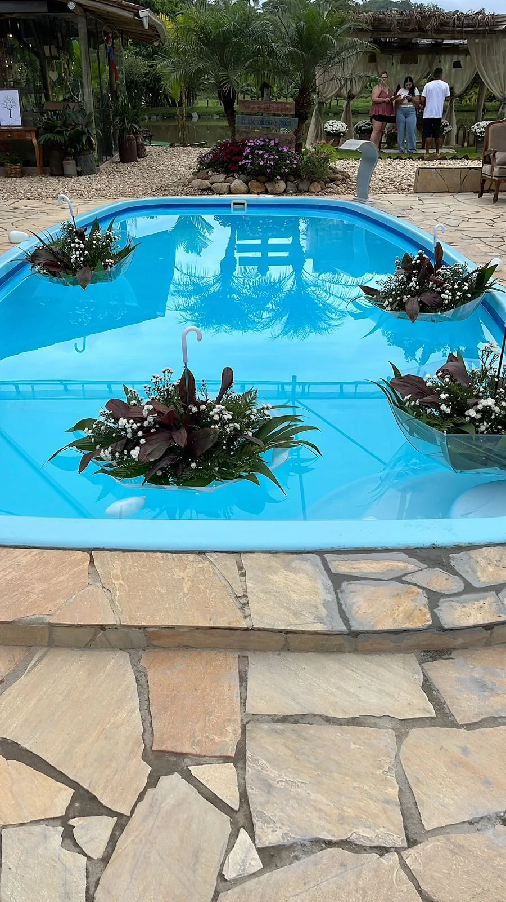
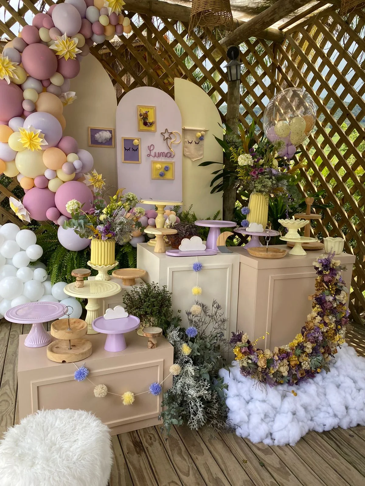
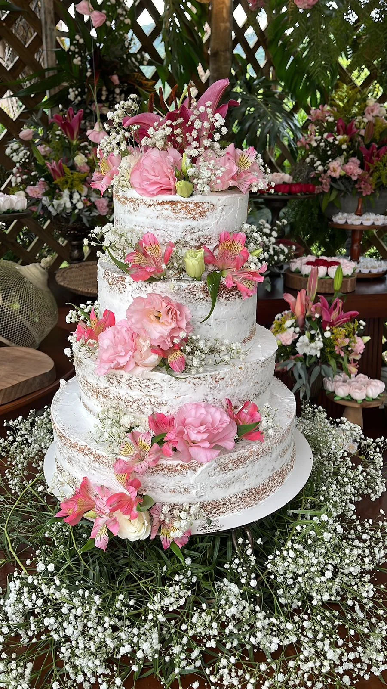
Atualizações
Instagram conectado ao projeto
Pronto para feed automático